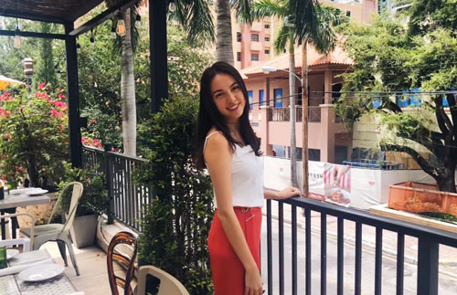

Hi!
My name is Jaime Harn, and I’m a fourth-year student at the University of Miami majoring in journalism, economics and political science with a minor in public relations. Recently, I received the university’s Plus One Scholarship, an award that grants undergraduate students a tuition-free year or semester to pursue other interests and take courses beyond current degree requirements. I will be taking this opportunity to enroll in business and Spanish classes, two subjects I am very thrilled to explore. My expected graduation date is December 2021.
Although I have lived in South Florida for most of my life— about 15 years, I consider myself a pretty international person. I was born in Hong Kong and lived in Brussels for five years before moving to the States. Ethnically, I am from Australia and Vietnam, and because I still have family in both countries, I visit there about once a year (unfortunately not this year due to the coronavirus).
At the University of Miami, I like to stay active in the community by joining various student organizations. I am a member of the competitive Model United Nations team, clerk of the Supreme Court for Student Government and senior editor of our school newspaper, The Miami Hurricane. Beyond supplementing my education and sharpening my skills, these student organizations have introduced me to some of the most interesting and influential people in my life.
When I’m not doing anything school-related, you can find me watching baking shows and recreating what I see people make, exploring different restaurants, solving various forms of puzzles and driving around with my friends while listening to music and singing.
Overall, I’m a creative and strategic thinker who loves to take on new challenges, and I’m excited for all the opportunities to come.